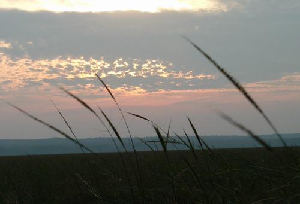

Action
Take Action to Protect Wild Rice!

ATTENTION: Â PROTECT WILD RICE TODAY!
Contact your state legislators TODAY, tell them to support legislation protecting Wild Rice.
         Vote in  support  of Bill 1662 and Bill 1663.Â
CALL, E-MAIL, AND WRITE YOUR MINNESOTA LEGISLATORS
to find out who represents YOU scroll down or visit MN legistors website:
Join our ACTION LIST
To find out more, stay up to date on Events, Action Alerts, and our Newsletters please contact us.
Volunteer
Every year we have many volunteers and interns that help our project and our campaign. Please contact us if you would like to volunteer or visit our project.
You can also help support Native Economies and Traditional Practices by buying our Native Hand Harvested Lake Wild Rice
Support Legislation
In 2005 we introduced Senate Bill 1566 and House Bill 1382 to prohibit the introduction of Genetically Engineered wild rice into the State of Minnesota. We will be introducing more Legislation in 2006. Please contact your Senators and Representatives to tell them you support future versions of these bills in the 2006-2007 session. You can find out who represents you by going to:
www.leg.state.mn.us/leg/Districtfinder.asp
PLEASE let us know you've taken action so we can track our progress! (e-mail wildrice@welrp.org)